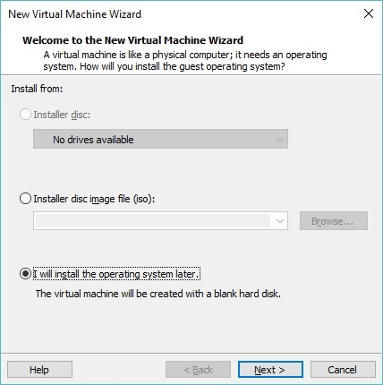
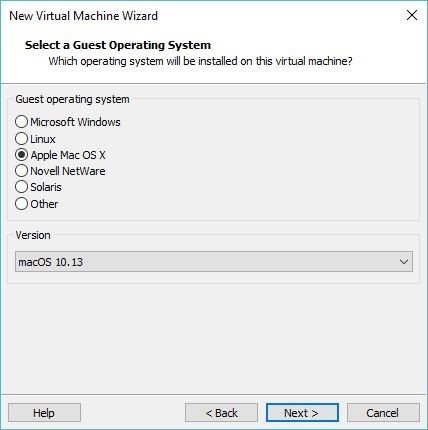
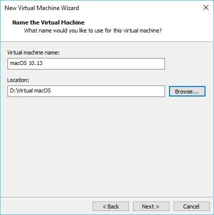
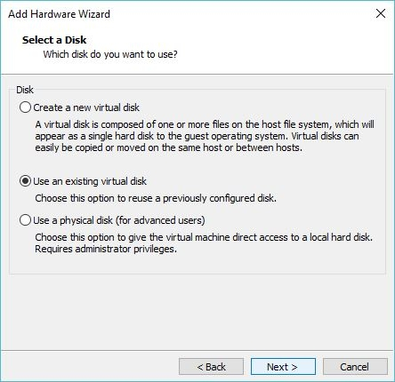
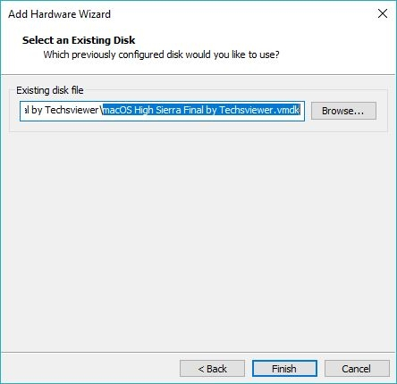
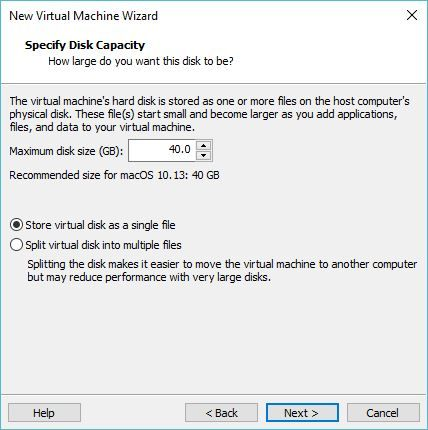
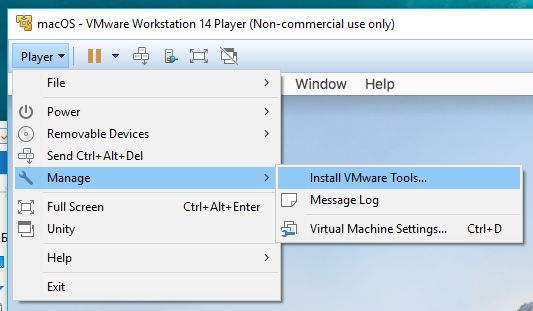

Установка macOS на компьютер через VMWare
§Введение
Запустить операционную систему macOS Mojave «поверх» Windows на ПК или ноутбуке можно с помощью виртуальных машин — программ, которые эмулируют работу одной операционной системы в среде другой. На этой странице содержится инструкция по установке полностью бесплатной версии одной из таких программ — VMWare Workstation Player. Работающая на виртуальной машине (далее — ВМ) macOS Mojave отображается как обычная программа для Windows — в окне или режиме полного экрана.
MacOS в качестве виртуальной ОС не предложит всех своих возможностей по техническим причинам и будет работать медленней, в следствие чего не способна оставить полноценные впечатления от своей работы. Но для поверхностного ознакомления с ОС от Apple такой способ установки вполне сгодится.
§Требования
- ПК/ноутбук на базе процессора Intel;
- более 40 Гб свободного места на жестком диске;
- программа Workstation Player Free: www.vmware.com/products;
- архиватор WinRAR (нестарый, чтоб не ругался на битый архив);
- образ macOS для ВМ: Catalina (Google Drive, пароль: Geekrar.com) / Mojave (Яндекс Диск);
- патч VMWare Unlocker: Github (unlocker.zip, 6.44 MB) / Google Drive (v2.0.8);
- базовый уровень английского языка и владения компьютером.
§Инструкция
- Установите VMWare Workstation Player (далее — VMWare).
- Распакуйте архив c Unlocker и запустите win-install.cmd от имени администратора. Таким образом в VMWare добавляется поддержка macOS.VMWare во время работы Unlocker должна быть закрыта.

- Откройте VMWare и нажмите “Create a new Virtual Machine”.
- Выберите “I will install the operating system later”.

- Выберите Apple Mac OS X версии 10.14 или просто нажмите Next

Если пункт с Mac OS не появился в настройках VMWare, попробуйте другую версию Unlocker, удаляя перед этим предыдущую через win-uninstall.cmd.
- Укажите папку, в которую будет установлена виртуальная ОС. Запомните ее путь.

- Откройте настройки созданной ВМ из начального экрана и удалите Hard Disk.
- Добавьте виртуальный жесткий диск: Add > Hard Disk > SATA.
- После выберите “Use an Existing Virtual Disk” и укажите путь к образу с macOS Mojave (большой файл с расширением vmdk).


- В параметрах диска советую выбрать “Store virtual disk as a single file”, как наиболее производительный вариант.

- Не забудьте выделить достаточное количество памяти для ВМ (>=50% от общей суммы ОЗУ компьютера и желательно не менее 4Гб).
- Нажмите OK и закройте VMWare, иначе при старте ВМ появится сообщение об ошибке. ⚠️
- Перейдите в папку ВМ и откройте файл macOS 10.14 с помощью блокнота. Это небольшой файл размером ~2 Кб. Вставьте туда последней строкою код:
smc.version = "0". Сохраните изменения.
- Все, теперь можно запустить VMWare и начать установку macOS Mojave!
- Для того чтобы отказаться от входа в учетную запись Apple, нажмите на Set Up Later.
- По окончании установки, подключите VMWare Tools: Player > Manage > Install VMWare Tools. Через некоторое время на Рабочем столе должен появиться образ патча с установщиком.

Патч VMWare Tools нужен главным образом для того, чтобы VMWare работала быстрее и поддерживала родное разрешение экрана.
Могут наблюдаться проблемы с производительностью в течении 10-15 минут после появления Рабочего стола, так как процесс установки к тому времени еще не завершен.
- Установите VMWare Tools.
- Система безопасности macOS Mojave заблокирует VMWare Tools как неизвестное расширение. Зайдите в настройки ОС (значок шестеренки), далее в раздел “Security and Privacy” и разблокируйте патч кнопкой Allow.
- Перезагрузите ВМ. Возможно, потребуется сделать это несколько раз.
Готово! Теперь macOS Mojave должна работать на Windows как виртуальная ОС! 😊


§Советы
- если интерфейс macOS Mojave будет слишком крупным, в режиме работающей ВМ зайдите в настройки VMWare: Player > Manage > Virtual Machine Settings > Display и уберите галку с Display Scaling.
- для локализации интерфейса откройте System Preferences > Language & Region, затем добавьте язык в Prefered Languages и сделайте его первым в списке.